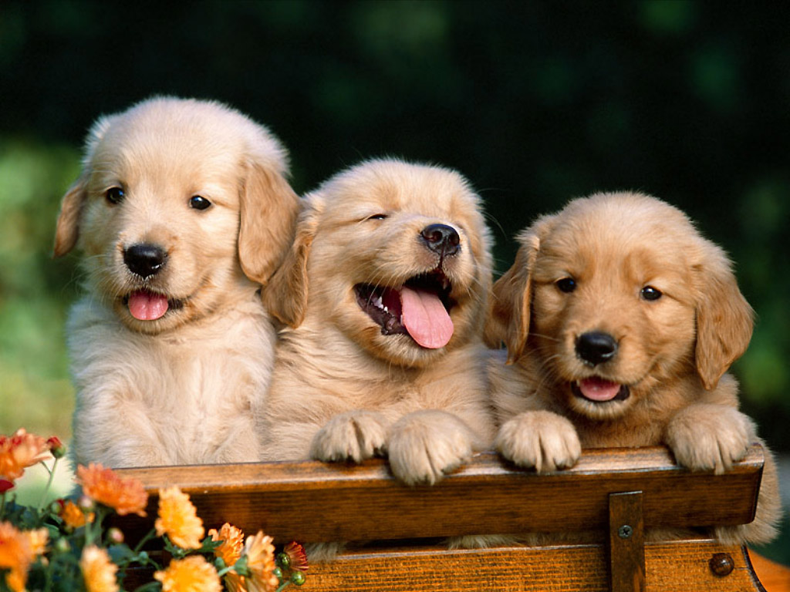
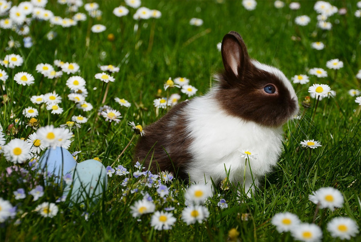
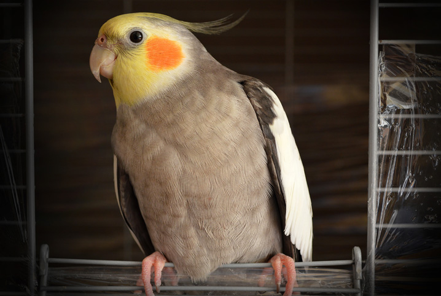

Animais Domesticos Populares
Um animal de estimação é um animal doméstico selecionado para o convívio com os seres humanos por questões de companheirismo ou divertimento, o que não significa que essa seja a única função dessas espécies na nossa sociedade.

Cachorro
O cachorro, é um dos animais mais estimados do mundo. Ele foi um dos primeiros bichos a serem domesticados e treinados para conviver com as pessoas.

Gato
Existem gatos domésticos em praticamente todas as partes do mundo. Muitos são animais de estimação, mas há também aqueles que vivem na rua e não têm moradia fixa.

Coelho
Coelhos de estimação são bem carinhosos e gostam de ficar por um tempinho no colo ganhando carícias e mimos, ou tirar sonequinhas enquanto isso.

Passaro
Os pássaros são uma ótima companhia para muitas pessoas que os preferem como animais de estimação.